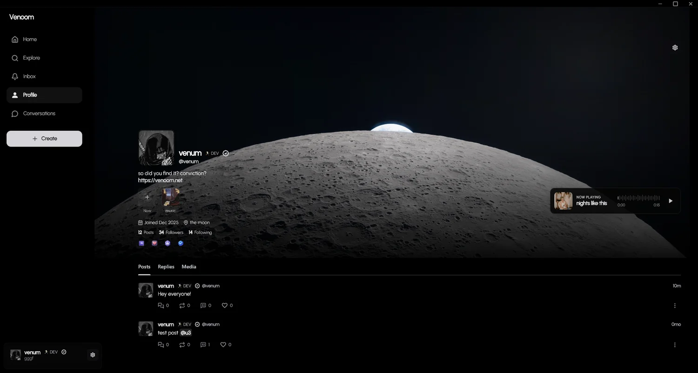
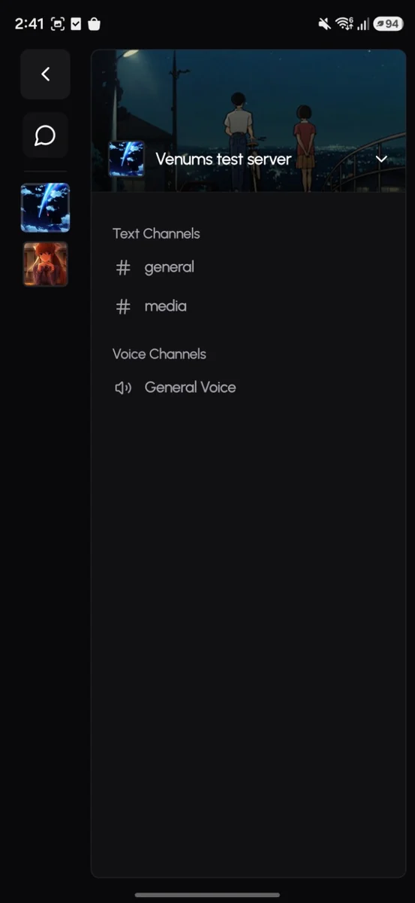
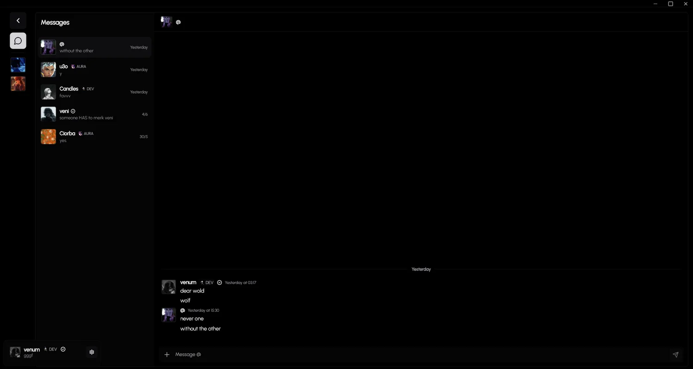
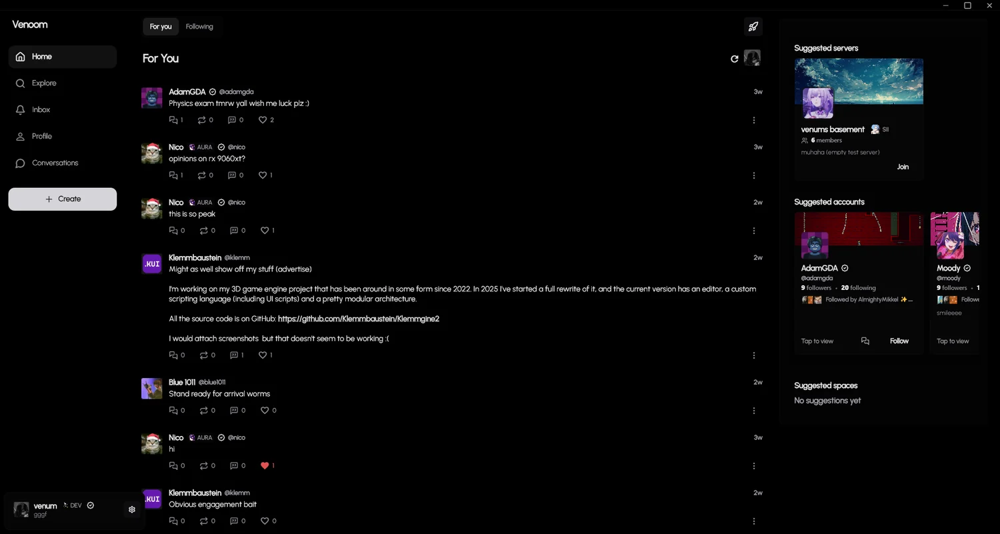
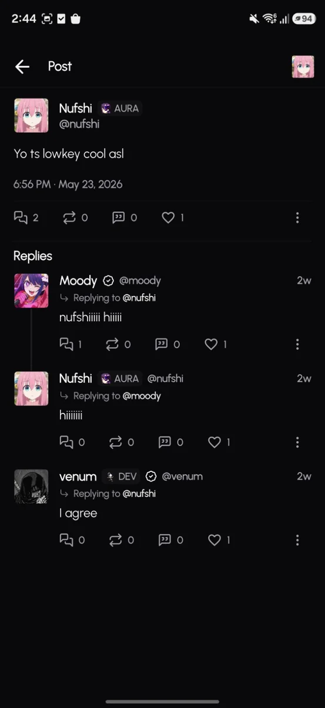
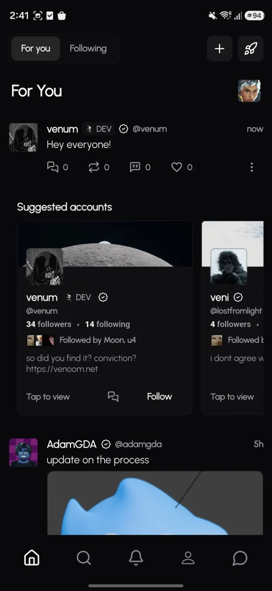

Features
Post, talk, and make your own space.
Post from your profile
Share thoughts, images, replies, and updates from one profile. People can follow you, reply, repost, and keep up with what you post.
- Public posts and replies
- Reposts, likes, and quote-style posts
- Profile banners, avatars, badges, and media filters

Make a community
Create a server for your friends, project, game, class, or public community. Keep channels simple and make the space easy to join.
- Text channels for updates and media
- Voice channels for calls
- Small private groups or larger public servers

Message people
Use DMs and private groups when a public post or server channel is not the right place.
- Direct messages
- Private group chats

Voice and screen share
Join voice channels inside communities, call people, and share your screen in good quality.
- Voice channels anyone in the server can join
- Calls for friends and groups
- High-quality screen sharing included

Media and profile customization
Upload high-quality pictures, use GIF profile pictures and banners, and make your profile feel like yours.
- High-quality images
- GIF avatars and banners
- Custom profile details and badges


Open or download
Use Venoom in the browser, on Windows, or on Android.